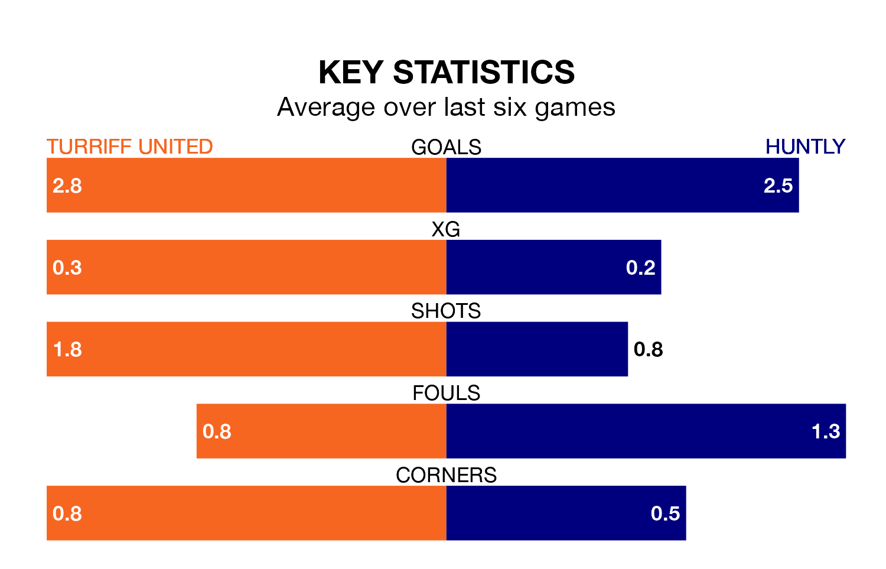

Turriff United host Huntly on Saturday at the Haughs in Highland Football League.
In their last league match, on February 3, Turriff lost to Formartine United 2-1 at home.
Huntly won, 4-2 away at Clachnacuddin.
With 59 goals in 21 games so far this season, Huntly are the league's highest scorers with 2.8 goals per game. And they are conceding at an average rate, letting in 40 goals at a rate of 1.9 per game.
Turriff are also above average scorers, with 2.5 goals per game, compared to a league average of 1.9. They have conceded 1.9 goals per game.
In the last 10 years, Turriff and Huntly have played each other on 12 occasions. Turriff won seven of them and Huntly five.
On average, Turriff scored 2.2 goals and Huntly 1.8 in those matches.
Their last meeting was on September 9, when Huntly won 4-2 at home.
The visitors are seventh in the table after 21 games, of which they have won 11 and drawn three, earning 36 points.
United are one place behind Huntly in eighth, with 12 wins and nine losses putting them on the same number of points.
The home side are in reasonable form in Highland Football League, with four wins and two losses from their last six games.
With three wins and three losses over that period, Huntly's form is worse – they have taken nine points from 18, compared to Turriff's 12.
Updated: 10:01 (UTC), 06/02/24